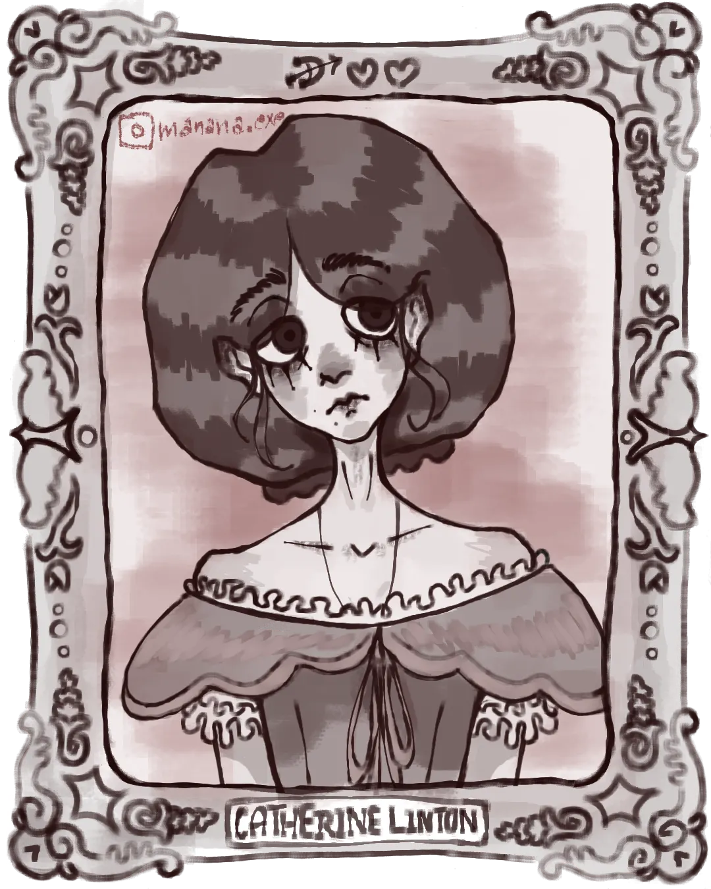
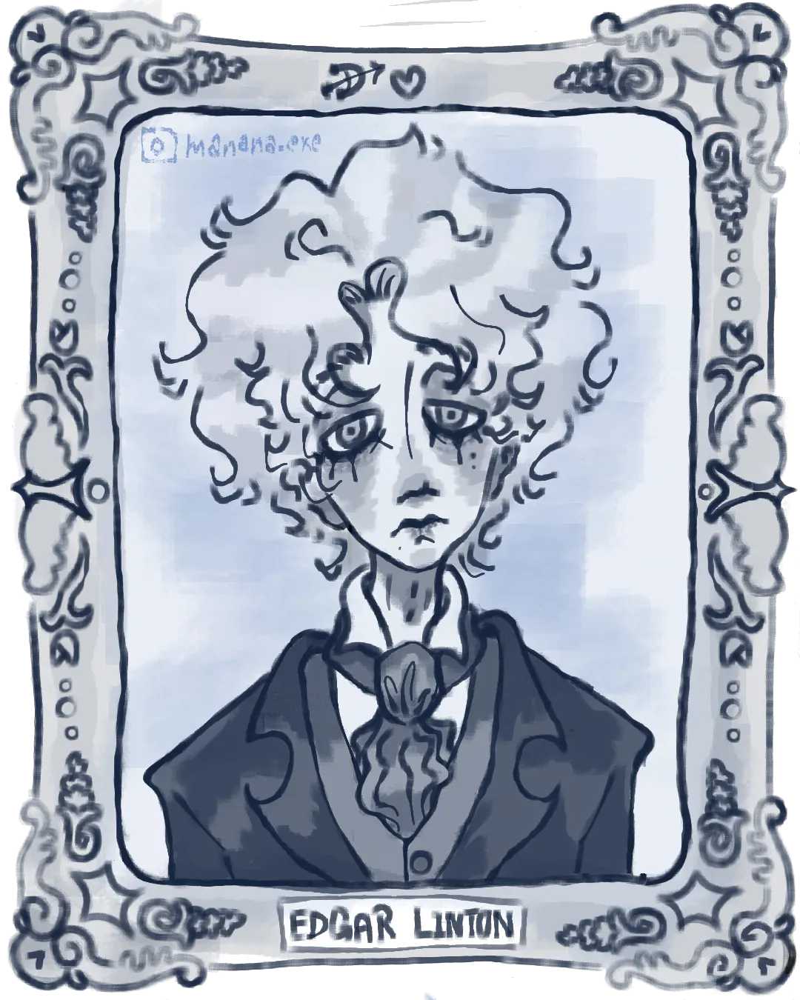
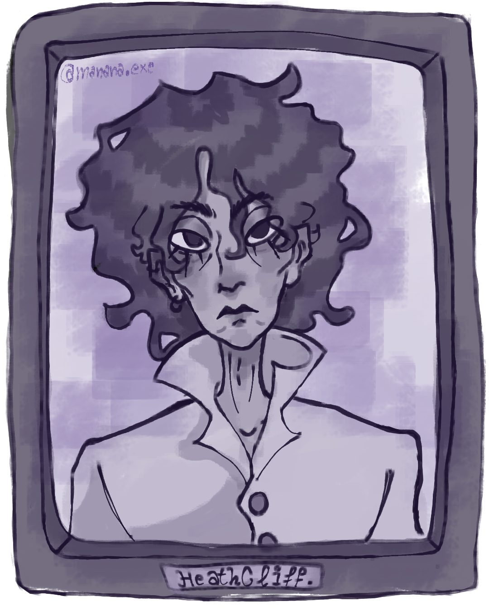

A Book Review and a Character Sketch of Wuthering Heights
Review written by: Zainab Ammar | Character Sketch by: Yusur Ahmed
Wuthering Heights is the one and only novel written by Emily Brontë, which was first published in 1847. Some would argue that it is a Gothic romance novel, and some would differ; such as myself, Wuthering Heights is no love tale. It is a tale of identity crisis, demolished dignity, unshakable pride, and envy. It is a tale about a group of people who lack empathy, which later develops into a sense of apathy toward each other and leads them into a series of apathetic, unconsidered events, motivated by the demolished dignity of Heathcliff, the unshakable pride of Edgar Linton, and the unbearable identity crisis of Catherine Earnshaw. In this article, we will dive deeper into each aspect!
THE IDENTITY CRISIS OF CATHERINE EARNSHAW

The identity crisis of Catherine Earnshaw began when the Lintons took her in. They took great care of her; they sought to civilise her and make her a noble, decent woman. They almost succeeded, since she truly adapted to their manners and beliefs, yet deep down she yearned and longed for Wuthering Heights, her true home, her savage little self. It was pretty obvious that the Lintons’ attempts to civilise Catherine worked on a surface level; her core was still as it was, which was the reason why she couldn’t abandon Heathcliff. “He’s more myself than I am; whatever our souls are made of, his and mine are the same, and Linton’s is as different as a moonbeam from lightning, or frost from fire.” Catherine didn’t just love Heathcliff; Heathcliff reminded her of her true self, the one she yearned for, the one she tried so hard to bury that part of herself that she was ashamed of showing to the Lintons, fearing they would forsake her.
At the same time, Catherine loved Edgar Linton, yet her love for him was more convenience and social alignment, for Edgar represented the new version of herself, the civilised version, the one she ought to be: the delightful, good mannered woman. After Edgar Linton’s pride took over his judgment, he asked Catherine to make a stand and choose between them, and Catherine simply could not endure losing either Heathcliff (the inner Catherine) or Edgar (the outer Catherine). Due to this unbearable pressure of swinging between what you are and what you want and ought to be, Catherine Earnshaw physically and psychologically collapsed.
THE WOUNDED PRIDE OF EDGAR LINTON

Edgar is born and raised a gentleman. He is graceful, well mannered, and instilled with civilised virtues, yet he is a very egotistical man, and what triggered his pride was the fact that Catherine didn’t possess the ability to abandon Heathcliff for him—the man he degraded and thought so little of, the man he looked down on and humiliated socially, which is the reason he held grudges against Heathcliff, an unshakable, unbreakable grudge.
THE DEMOLISHED DIGNITY OF HEATHCLIFF

Heathcliff rises in status when Mr. Earnshaw brings him home and favors him, treating him almost like a son. During this period, Heathcliff enjoys relative dignity and equality with Catherine. After Mr. Earnshaw’s death, Hindley Earnshaw takes control and systematically degrades Heathcliff. He is reduced to the status of a servant, denied education, and subjected to physical and emotional abuse. This leads him to become a completely savage, spiteful man with no manners or integrity. When the Lintons take Catherine in, and after she marries Edgar Linton, these events lead Heathcliff to suffer from a broken heart and a bruised dignity, especially after Catherine begins to look down on him and feel ashamed of him.
At that very specific moment, he turns into a beast; the hatred and spite he carries within him transform him into a cruel figure who runs away, motivated by jealousy. He rises for revenge, accumulation of power, and to prove to Catherine that he can be better than both her and Linton.
THE ENDLESS ENVY
After Heathcliff returns, Linton is weak, sickly, and spoiled, which frustrates Heathcliff and fuels his spite and hatred towards the Lintons. This, in the process, leads Heathcliff into marrying Isabella Linton, motivated by revenge and jealousy towards Edgar. Heathcliff tries to manipulate the next generation through his son, Linton Heathcliff, even though the little son is too weak to fully carry out his father’s plans. Heathcliff also holds a grudge towards Catherine’s and Edgar’s daughter, and he tries to force her to marry his son, partly to degrade her family and partly to gain control of Wuthering Heights.
Wuthering Heights is truly a tale of unending conflict between civilisation and barbarism. What I personally loved most about this novel is that it has no black and white, no good and evil; everyone has done some really bad things, and they are all paying for it. And in the end I hope you enjoyed diving into the details of this tragic book with me, thanks for reading!